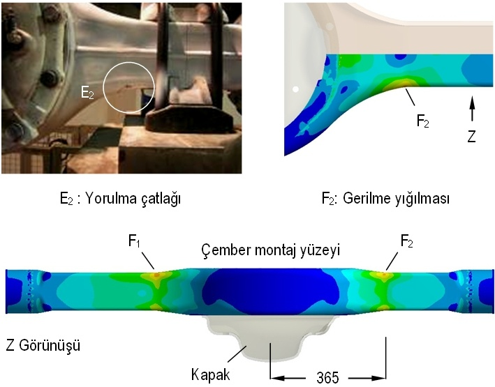
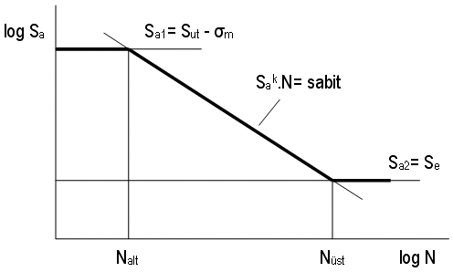
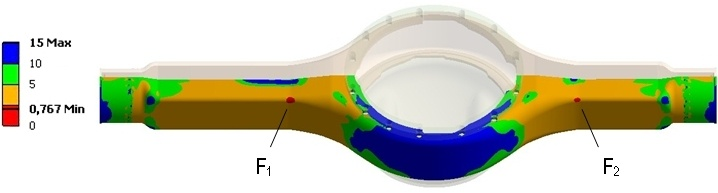

|
3. Gövdenin yorulma ömrünün belirlenmesi
Gövde iþletim sýrasýnda sürekli olarak dinamik zorlanmalarla karþý karþýya bulunduðundan, statik zorlanma yanýnda yorulma mukavemeti açýsýndan da deðerlendirilmelidir. Bunun için S460N malzemesinin Wöhler diyagramý, Þekil 12'de görülen pratik bir yöntem yardýmýyla, çekme deneyi sonuçlarý üzerinden yaklaþýk olarak oluþturulmuþtur. Ýlk olarak, diyagramý düþey eksende sýnýrlayan iki yatay asimptot olan Sa1= Sut-m ve Sa2= Se gerilme deðerleri hesaplanmýþtýr. Sa1'in Nalt= 102 yük tekrar sayýsýna kadar, Sa2'nin ise çelik malzemeler için sürekli mukavemet sýnýrý olarak bilinen Nüst= 106 tekrar sayýsýndan sonra sabit kaldýðý kabul edilmiþtir. Elde edilen iki kesiþim noktasý arasýnda diyagramýn doðrusal karakteristiðe sahip olduðu düþünülmüþtür [8].

Þekil 11. Test ve analiz sonuçlarýnýn karþýlaþtýrýlmasý

Þekil 12. Wöhler diyagramýnýn yaklaþýk çizimi [8]
Sa1'in belirlenmesinde kullanýlan ortalama gerilme m, yorulma testleri sýrasýnda uygulanan maksimum ve minimum düþey yüklere denk düþen gerilmelerin ortalamasý olup;
 (1) (1)
baðýntýsýndan bulunmuþtur. Sonlu elemanlar analizlerinden elde edilen deðerler yardýmýyla m= 198,22 MPa olarak hesaplanmýþtýr. Se gövde malzemesinin düzeltilmiþ yorulma mukavemeti olup, ideal yorulma dayanýmý Se' üzerinden hesaplanmýþtýr. Çekme dayanýmý 1400 MPa'dan düþük çelik malzemeler için Se', malzemenin çekme dayanýmýnýn yaklaþýk 0,504 katý olarak verilir [9;10]. Ancak bulunan bu deðer, yüzeyi çok hassas iþlenmiþ, dairesel kesitli ve çubuk biçimli ideal deney numunesini temsil etmektedir. Aks gövdesi benzeri karmaþýk yapýlý ve belirli yüzey pürüzlülüðüne sahip parçalarýn yorulma hesaplarýnda, bu deðer tasarým, imalat ve çevresel etkiler gibi çeþitli etkenleri içeren, düzeltme faktörü k ile birlikte deðerlendirilmelidir [11]. Böylece Se;
 (2) (2)
baðýntýsýyla ifade edilir. Burada,
 (3) (3)
þeklindedir. Yüzey faktörü ka, imalat yöntemine baðlý olup;
 (4) (4)
baðýntýsýyla tanýmlanýr. Þekillendirme sonrasýnda parça yüzeyi, sýcak haddelenmiþ sacýn yüzeyindekine yakýn pürüzlülük özelliði kazanmaktadýr. Bu durum için a= 57,7 ve b= -0.718 olarak verilir [9]. Çekme deneylerinden elde edilen Sut= 629,9 MPa için ka= 0,564 deðerini alýr. Bununla birlikte, gövdeye imalatýn son aþamasýnda uygulanan kumlama iþlemi yüzey yorulma mukavemetini arttýrmaktadýr. Bu artýþ çelikten mamul makine parçalarý için literatürde yaklaþýk %70 olarak verildiðinden, ka= 0,959 olarak düzeltilmiþtir [8]. Dairesel olmayan kesitlerde h= 50 mm'den büyük kesit yükseklikleri için boyut faktörünün kb= 0,75 alýnmasý tavsiye edilmektedir. Eðilme zorlamasýnda yük faktörü kc= 1 olup, iþletim sýcaklýðýnýn T= 0-250°C aralýðýnda olmasý durumunda sýcaklýk faktörü kd= 1 olarak hesaba katýlmaktadýr [12]. Gövdenin hasara uðrayan bölgelerinde gerilme yýðýlmasý oluþtuðu, statik analizlerde belirlenmiþtir. Bu nedenle yukarýda açýklanan faktörlere ek olarak, gerilme yýðýlmasýna baðlý düzeltme faktörü ke'nin de dikkate alýnmasý gerekir. Anýlan deðer;
 (5) (5)
þeklinde hesaplanýr. Burada Kf yorulma için gerilme yýðýlma faktörüdür. Güvenliðin ön planda tutulduðu konstrüksiyonlarda Kf, statik gerilme yýðýlma faktörü Kt'ye eþit alýnabilir [9]. Gövdenin Þekil 3'te verilen boyutlarý ve karmaþýk þekli göz önüne alýndýðýnda Kt'nin standart literatürden elde edilebilmesi oldukça zor olduðundan, gerilme yýðýlma faktörü kavramýnýn tanýmýný veren;
 (6) (6)
baðýntýsýndan yararlanýlmýþtýr. Baðýntýda, p çentik etkisi nedeniyle ortaya çýkan maksimum gerilmeyi, n ise anýlan bölgede gerilme yýðýlmasý oluþturan etmen bulunmamasý durumunda, ayný yüklemede ortaya çýkmasý beklenen nominal gerilmeyi simgelemektedir [8; 13]. p= maks=388,7 MPa olarak alýnmýþtýr. Nominal gerilme n, Þekil 9'da verilen yükleme modeli üzerinden,
 (7) (7)
þeklinde hesaplanmýþ, gövde kendi ekseni boyunca sabit X1-X1 kesitine sahip, eðilmeye maruz basit bir kiriþ gibi düþünülmüþtür. Kritik kesitteki maksimum eðilme momenti M bu model yardýmýyla 41,9.106 N.mm ve kesitin mukavemet momenti Z= 127507 mm3 olarak hesaplanmýþtýr. Böylece n= 329 MPa bulunmuþtur. Bu durumda Kt Kf= 1,181 ve ke= 0,846 olup toplam düzeltme faktörü k= 0,608 deðerini almaktadýr. Elde edilen deðerler yardýmýyla oluþturulan Wöhler diyagramý ANSYS® Workbench V11.0 kullanýcý arayüzünde tanýmlanmýþ ve gerilme-ömür (stress-life) yaklaþýmý kullanýlarak, sonsuz ömür kriterine göre yorulma analizi gerçekleþtirilmiþtir. Analizde, m>0 durumunda kullanýlmasý önerilen seçeneklerden biri olan Düzeltilmiþ Goodman Yaklaþýmý uygulanmýþtýr [8]. Bu yaklaþým, n emniyet katsayýsý olmak üzere; Kf= 1,181 ve ke= 0,846 olup toplam düzeltme faktörü k= 0,608 deðerini almaktadýr. Elde edilen deðerler yardýmýyla oluþturulan Wöhler diyagramý ANSYS® Workbench V11.0 kullanýcý arayüzünde tanýmlanmýþ ve gerilme-ömür (stress-life) yaklaþýmý kullanýlarak, sonsuz ömür kriterine göre yorulma analizi gerçekleþtirilmiþtir. Analizde, m>0 durumunda kullanýlmasý önerilen seçeneklerden biri olan Düzeltilmiþ Goodman Yaklaþýmý uygulanmýþtýr [8]. Bu yaklaþým, n emniyet katsayýsý olmak üzere;
 (8) (8)
baðýntýsýyla tanýmlanýr. Burada gerilme genliði a;
 (9) (9)
þeklindedir. Gövde alt yarýmýndaki emniyet katsayýsý daðýlýmý Þekil 13'te görülmektedir. Parçanýn dýþ yüzeyinde en erken hasar baþlangýcýnýn F1 bölgesinde ve yaklaþýk N= 3,6.105 yük tekrar sayýsýnda ortaya çýkacaðý belirlenmiþtir. Bu bölgedeki emniyet katsayýsý n= 0,93 olarak hesaplanmýþtýr. Ýç yüzeyde minimum emniyet katsayýsý, gerilme yýðýlmasýnýn en yüksek olduðu F2 bölgesinde n= 0,767 deðerini almaktadýr. Bunun anlamý, her iki bölgede de parça için öngörülen minimum sýnýr olan 5.105'ten daha düþük yük tekrar sayýlarýnda hasar oluþmasýnýn mümkün olduðudur. Belirlenen iki kritik bölge dýþýnda parça, sonsuz ömür koþulunu (N> 106 yük tekrarý) saðlamaktadýr.

Þekil 13. Gövde alt yarýmýnda emniyet katsayýsý daðýlýmý
4. Deðerlendirme ve öneriler
Uygulanan gerilme analizi, testlerde hasara uðrayan bölgelerin yükleme nedeniyle gerilme yýðýlmasýna maruz kaldýðýný ortaya koymuþtur. Yorulma analizi, kritik F1 ve F2 bölgelerinde; gövdenin dayanmasý istenen minimum sýnýr olan Nmin = 5.105 deðerinden daha düþük yük tekrar sayýlarýnda hasar oluþabileceðini göstermektedir. Gövdenin yorulma ömrünün arttýrýlmasý, büyük ölçüde gerilme yýðýlmasýnýn azaltýlmasýna baðlýdýr. Bunun için ilk olarak akla gelen çözüm, kullanýlan sacýn kalýnlýðýný arttýrmaktýr. Ancak mevcut konstrüksiyonda, kritik bölgeler dýþýnda sonsuz ömür koþulu halihazýrda saðlanmakta olduðundan sac kalýnlýðýnýn parça bütününde arttýrýlmasý, gereksiz aðýrlýk artýþýný da gündeme getirmektedir. Dolayýsýyla pratik bir çözüm deðildir. Cidarýn örneðin 0,5 mm kalýnlaþtýrýlmasý, kritik kesitlerde yorulma ömrünü 5,8.105 tekrar sayýsýnýn üzerine çýkarmakta, bununla birlikte gövde kütlesinde %5 oranýnda bir artýþa neden olmaktadýr. Bu çözüme alternatif olarak, gövde kolu - diferansiyel yataðý geçiþ geometrisini yumuþatacak biçimde yapýlacak þekillendirme deðiþikleri ile yorulma dayanýmý açýsýndan istenen iyileþmeyi saðlayabilmek mümkündür. Böyle bir deðiþiklik, belirgin bir kütle artýþýna yol açmayacaktýr.
Çemberin yapýsý da gövde yorulma ömrünü belirli ölçüde etkilemektedir. Bu parçanýn gerilme yýðýlmasýna etkisini saptamak amacýyla, maksimum yükleme durumu için çember kullanýlmadan yapýlan sonlu elemanlar analizinde, kritik kesitte maks= 427,5 MPa deðeri elde edilmiþtir. Bu sonuca göre, mevcut çember anýlan bölgede gerilme yýðýlmasýný %10 oranýnda azaltmaktadýr. Parça boyutlarýnýn uygun þekilde deðiþtirilmesiyle daha yüksek rijitliðin saðlanmasý mümkündür. Bununla birlikte çember dýþ çapý, diferansiyel yataðý (banjo) çapýyla sýnýrlandýrýlmaktadýr. Radyal yönde et kalýnlýðýný arttýrmak için iç çapýn küçültülmesi ise diferansiyel kovaný baðlantýsý nedeniyle mümkün deðildir. Geriye kalan tek olasýlýk çemberin boyuna yöndeki kalýnlýðýnýn arttýrýlmasýdýr. Ýncelenen konstrüksiyonda, aktarma organlarýnýn yerleþimi nedeniyle kalýnlýk artýþý için verilen üst sýnýr 5mm'dir. Yapýlan sonlu elemanlar analizleri bu artýþýn yorulma ömrünü belirli ölçüde arttýrdýðýný ancak istenen minimum yük tekrar sayýsý deðerini elde etmek için yalnýz baþýna yeterli olmadýðýný göstermiþtir. Bu nedenle çember kalýnlýðýnýn arttýrýlmasý, yardýmcý bir çözüm olarak deðerlendirilebilir.
5. Sonuç
Arka aks gövdesi prototipine uygulanan düþey yorulma testlerinde, öngörülen yük tekrar sayýlarýna ulaþýlmadan ortaya çýkan yorulma hasarý, sonlu elemanlar yöntemi yardýmýyla incelenmiþtir. Test koþullarý esas alýnarak gerçekleþtirilen bilgisayar destekli analizde belirlenen gerilme yýðýlma bölgelerinin, testlerde hasara uðrayan bölgelerle tam olarak örtüþtüðü görülmüþtür. Maksimum yükleme durumu için gövdenin statik mukavemet koþullarýný saðladýðý; buna karþýn ayný yükün belirli bir yükleme aralýðýnda tekrarlý olarak uygulanmasý durumunda tasarým için öngörülen minimum yük tekrar sayýsýndan daha önce hasar oluþabileceði belirlenmiþtir. Sonlu elemanlar analizleri yardýmýyla, hasarýn nerede ve hangi yük tekrar sayýsýnda ortaya çýkacaðý yaklaþýklýkla tahmin edilebilmektedir. Özellikle çalýþma ömrü boyunca dinamik olarak zorlanmasý öngörülen parçalarýn tasarým aþamasýnda, sanal ortamda uygulanacak bu tür analizler test ve prototip maliyetlerini önemli ölçüde azaltmaktadýr. Bunun yaný sýra tasarýmdan kaynaklanabilecek yetersizliklerin, seri imalata geçilmeden belirlenmesi ve alýnacak konstrüktif önlemlerle, iþletim aþamasýnda ortaya çýkabilecek olasý hasarlarýn önüne geçilmesi mümkündür.
TEÞEKKÜR
Yazarlar, bu çalýþma kapsamýnda sunduðu lisanslý yazýlým, bilgisayar donanýmý ve test olanaklarýndan dolayý Ege Endüstri ve Ticaret A.Þ.'ye, deðerli fikirleriyle çalýþmaya verdikleri destekten dolayý Dokuz Eylül Üniversitesi'nden Y.Doç.Dr. E. Çýnar Yeni ve Pamukkale Üniversitesi'nden Doç.Dr. Cemal Meran'a teþekkür eder.
KAYNAKÇA
[1] Reimpell J, Stoll H, Betzler JW, The Automotive Chassis: Engineering Principles, Butterworth-Heinemann, 2002, s.39
[2] ANSYS Theory Reference, ANSYS Release 10.0, ANSYS, Inc.; 2005
[3] Erdemir Ürün Kataloðu, 2007, s.50
[4] Hoffmeyer J, Döring R, Seeger T, Vormwald M, Deformation behaviour, short crack growth and fatigue lives under multiaxial nonproportional loading, Int J Fatigue 2006; 28; 508-520
[5] Yüksel M, Malzeme Bilimleri Serisi-Cilt 1: Malzeme Bilgisi, TMMOB Makina Mühendisleri Odasý, Yayýn No: MMO/2003/271/2, Ankara, 2003, s.338
[6] Gordon KW, Design, evaluation and selection of heavy-duty rear axles, SAE Transactions, Vol.63, 1955, s.5-34
[7] Rende H, Makina Elemanlarý, Cilt 1, Seç Yayýn Daðýtým, Ýstanbul, 1996, s.3-21
[8] Schijve, J., Fatigue of Structures and Materials, Kluwer Academic Publishers, Dordrecht, Netherlands, 2001, s. 68-172
[9] Shigley JE, Mischke C, Mechanical Engineering Design, McGraw-Hill, Inc., New York, 1989, s. 286-288
[10] Lee YL, Pan J, Hataway R, Barkey M, Fatigue Testing and Analysis, Elsevier Butterworth-Heinemann, New York, 2005, s.162
[11] Smith M, Fisher F, Romios M, Es-Said OS, On the Redesign of a Shear Pin Under Cyclic Bending Loads, Eng Fail Anal 2007;14;138-146
[12] Shigley JE, Mechanical Engineering Design, McGraw-Hill Kogakusha, Ltd., Tokyo, 1977, s.196
[13] Pilkey WD, Pilkey DF, Peterson's Stress Concentration Factors, 3rd. ed, John Wiley & Sons, Inc, New York, 2008, s.159
|